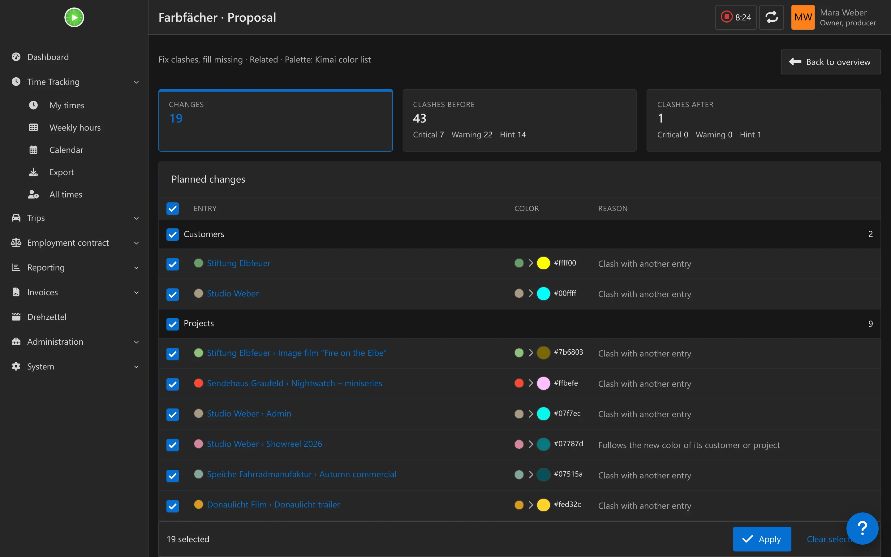
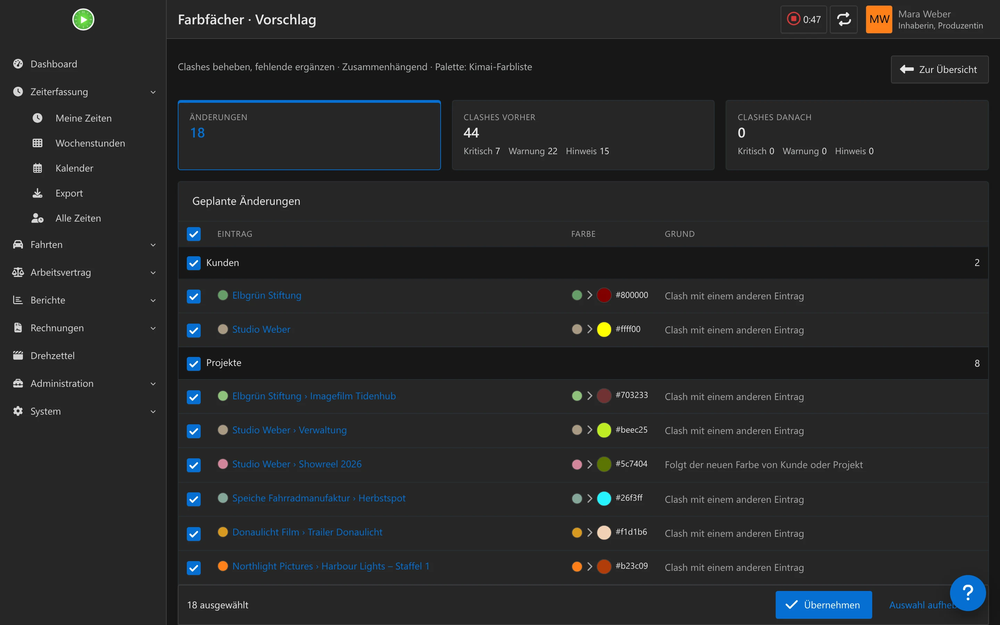

Find clashes by severity
Clashes nach Schwere finden
Notice, warning or critical, measured as perceived distance (ΔE) in the OKLab color space. How much a clash weighs depends on whether two entries are booked in the same weeks or sit in the same group.
Hinweis, Warnung oder kritisch, gemessen als wahrgenommener Abstand (ΔE) im OKLab-Raum. Wie schwer ein Clash wiegt, hängt davon ab, ob zwei Einträge in denselben Wochen gebucht werden oder in derselben Gruppe liegen.
Suggestions with a preview
Vorschlag mit Vorschau
Scope: fix clashes, fill in missing colors, or recolor everything. Apply with a bulk selection, then 15 minutes of “Undo”. Every state is backed up and can be restored from the history.
Umfang: Clashes beheben, fehlende Farben ergänzen oder alles neu färben. Übernehmen per Sammelauswahl, danach 15 Minuten „Rückgängig“. Jeder Stand wird gesichert und lässt sich aus dem Verlauf wiederherstellen.
Two ways to assign colors
Zwei Wege der Farbvergabe
Hierarchical: projects take their customer’s hue, activities stay close to their project. Maximally distinct: every color as far from all others as possible.
Zusammenhängend: Projekte im Farbton ihres Kunden, Tätigkeiten nahe ihrem Projekt. Maximal unterscheidbar: jede Farbe möglichst weit weg von allen anderen.
Kimai’s color list, or free
Kimais Farbliste oder frei
Suggestions can lean on Kimai’s color list (theme.color_choices) — Gruvbox with the Knust theme — or use the free color space. Optionally limit the palette to N colors, chosen for the largest mutual distance.
Vorschläge lehnen sich an Kimais Farbliste an (theme.color_choices), mit Knust also an Gruvbox, oder nutzen den freien Farbraum. Optional auf N Farben begrenzen, gewählt nach dem größten gegenseitigen Abstand.
A color field with live hints
Farbfeld mit Live-Hinweisen
A free color picker instead of a fixed list in customer, project and activity forms, with clash hints while typing and suggestions on click. Applies to the REST API too — external clients can set any hex value.
Freier Farbwähler statt fester Liste in Kunden-, Projekt- und Tätigkeitsformularen, mit Clash-Hinweisen beim Tippen und Vorschlägen per Klick. Gilt auch für die REST-API, externe Clients können jeden Hex-Wert setzen.
Automatic color, or locked
Automatische Farbe oder gesperrt
New entries without a color get one automatically, including over the API. Lock a color per entry — Farbfächer will never change it, no matter which suggestion you apply.
Neue Einträge ohne Farbe bekommen automatisch eine, auch über die API. Eine Farbe pro Eintrag sperren — Farbfächer ändert sie nie, egal welchen Vorschlag du übernimmst.
See every clash at a glance
Jeden Clash auf einen Blick
The overview under Administration → Farbfächer lists every clash with severity, type, the two entries involved, their ΔE, how many weeks they were booked together and why the clash matters.
Die Übersicht unter Administration → Farbfächer listet jeden Clash mit Schwere, Typ, den beiden betroffenen Einträgen, ihrem ΔE, den gemeinsam gebuchten Wochen und dem Grund, warum der Clash zählt.
- Color map by hue and lightness, an overview by customer, and a history of every change
- The shared-usage window (default 90 days) and the ΔE threshold are set under System → Settings
bin/console kimai:farbfaecher:analyze --plan clashesgives the same list on the console, read-only
- Farbkarte nach Farbton und Helligkeit, eine Übersicht nach Kunde und ein Verlauf aller Änderungen
- Das Fenster für gemeinsame Nutzung (Standard 90 Tage) und die ΔE-Schwelle stellst du unter System → Einstellungen ein
bin/console kimai:farbfaecher:analyze --plan clashesliefert dieselbe Liste auf der Konsole, rein lesend
Preview before you touch anything
Vorschau, bevor sich etwas ändert
Pick a scope and a strategy, and Farbfächer computes a plan: every planned change with the old and new color and a reason, plus clash counts before and after. Nothing is written until you select and apply.
Umfang und Strategie wählen, Farbfächer berechnet einen Plan: jede geplante Änderung mit alter und neuer Farbe und einem Grund, dazu die Clash-Zahlen vorher und nachher. Geschrieben wird erst nach Auswahl und Übernehmen.
- Deselect single entries or whole groups (customers, projects, activities) before applying
- Locked colors are always kept, even inside the selected scope
- Applied changes stay undoable for 15 minutes, and every earlier state can be restored from the history later
- Einzelne Einträge oder ganze Gruppen (Kunden, Projekte, Tätigkeiten) vor dem Übernehmen abwählen
- Gesperrte Farben bleiben immer erhalten, auch innerhalb des gewählten Umfangs
- Übernommene Änderungen bleiben 15 Minuten rückgängig machbar, jeder frühere Stand lässt sich später aus dem Verlauf wiederherstellen


How it works
So funktioniert es
Farbfächer adds one screen under Administration and runs the same logic from the console. It reads timesheets to weigh shared usage, then plans and writes colors in four steps.
Farbfächer bringt einen Bereich unter Administration und lässt dieselbe Logik auch über die Konsole laufen. Es liest Zeiteinträge, um gemeinsame Nutzung zu gewichten, und plant und schreibt Farben in vier Schritten.
Install
Installation
- Clone the plugin into
var/plugins/FarbfaecherBundle; the folder name must stayFarbfaecherBundle. - Run
bin/console kimai:reload. There is no migration to run. - Grant the
farbfaecherpermission under System → Roles to the roles that should see it (Admin and Super-Admin by default). - Set palette, ΔE threshold, palette size and the shared-usage window under System → Settings → Farbfächer.
- Klone das Plugin nach
var/plugins/FarbfaecherBundle; der Ordnername mussFarbfaecherBundlebleiben. - Führe
bin/console kimai:reloadaus. Eine Migration ist nicht nötig. - Vergib das Recht
farbfaecherunter System → Rollen an die Rollen, die es sehen sollen (standardmäßig Admin und Super-Admin). - Stelle Palette, ΔE-Schwelle, Palettengröße und das Fenster für gemeinsame Nutzung unter System → Einstellungen → Farbfächer ein.
Permissions
Rechte
| PermissionRecht | PurposeZweck | DefaultStandard |
|---|---|---|
farbfaecher | Overview, suggestions and settingsÜbersicht, Vorschläge und Einstellungen | Admin, Super-AdminAdmin, Super-Admin |
Questions
Fragen
Do I need the Knust theme?Brauche ich das Knust-Theme?
No. Farbfächer works with Kimai’s default color list or the free color space. With the Knust theme it follows Gruvbox automatically, because Knust sets that as Kimai’s color list.
Nein. Farbfächer funktioniert mit Kimais Standard-Farbliste oder dem freien Farbraum. Mit dem Knust-Theme folgt es automatisch Gruvbox, weil Knust das als Kimais Farbliste einträgt.
Does it change my colors right away?Ändert es meine Farben sofort?
No. Every scope first computes a preview; nothing is written until you select the changes and apply them.
Nein. Jeder Umfang berechnet zuerst eine Vorschau; geschrieben wird erst, wenn du Änderungen auswählst und übernimmst.
What if I don’t like a change?Was, wenn mir eine Änderung nicht gefällt?
Applied changes stay undoable for 15 minutes. Beyond that, every earlier state is kept in the history and can be restored from there.
Übernommene Änderungen bleiben 15 Minuten rückgängig machbar. Darüber hinaus bleibt jeder frühere Stand im Verlauf erhalten und lässt sich von dort wiederherstellen.
Does it fire Kimai’s update events?Löst es Kimais Update-Events aus?
No, colors are written directly to stay fast across hundreds of entries. Anything that listens for update events on customers, projects or activities won’t see these changes.
Nein, Farben werden direkt geschrieben, damit es auch bei Hunderten Einträgen schnell bleibt. Wer auf Update-Events von Kunden, Projekten oder Tätigkeiten hört, bekommt diese Änderungen nicht mit.
Changes
Änderungen
What each release brought, newest first. Every release adds an entry here and the same notes on the release page.
Was jede Version gebracht hat, die neueste zuerst. Jede Version bekommt hier einen Eintrag und dieselben Notizen auf der Release-Seite.
-
0.1.0
The first release: Farbfächer finds colors in Kimai that are hard to tell apart and suggests colors for customers, projects and activities that stay distinct and still belong together.Die erste Version: Farbfächer findet Farben in Kimai, die sich schwer unterscheiden lassen, und schlägt Farben für Kunden, Projekte und Tätigkeiten vor, die sich unterscheiden und trotzdem zusammengehören.